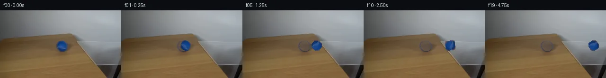

![首帧]()

Round 00
2026-11-05T03:10:41.498025+00:00像素候选变化代码 +273/−0inspection 更新
pixels 665fe204e8026af5 · code 827dae575eba5bc4
查看本轮 generate.py 真实 diff
--- previous/generate.py
+++ current/generate.py
@@ -0,0 +1,273 @@
+"""generate.py — Case 0025: Blue tennis ball rolls from table over clear glass.
+
+Method: Inpaint ball region with row-wise interpolation, extract ball texture,
+apply rolling rotation, composite across 20 frames at 4 fps.
+"""
+import numpy as np
+from PIL import Image
+from scipy import ndimage
+from pathlib import Path
+
+CASE_DIR = Path(__file__).parent
+H, W = 144, 256
+NUM_FRAMES = 20
+
+# ── 1. Load first frame ──────────────────────────────────────────────
+first = np.array(Image.open(CASE_DIR / "first_frame.png")).astype(np.float64)
+assert first.shape == (H, W, 3)
+
+# ── 2. Build ball mask ───────────────────────────────────────────────
+ball_mask = (
+ (first[:, :, 2] - first[:, :, 0] > 30)
+ & (first[:, :, 2] - first[:, :, 1] > 25)
+ & (first[:, :, 2] > 80)
+)
+ball_mask = ndimage.binary_opening(ball_mask, structure=np.ones((2, 2)), iterations=1)
+labeled, n_labels = ndimage.label(ball_mask)
+sizes = [(labeled == i).sum() for i in range(1, n_labels + 1)]
+ball_mask = labeled == (np.argmax(sizes) + 1)
+
+bp = np.argwhere(ball_mask)
+ball_cy = bp[:, 0].mean() # 75.55
+ball_cx = bp[:, 1].mean() # 130.79
+ball_radius = np.sqrt((bp[:, 1] - ball_cx) ** 2 + (bp[:, 0] - ball_cy) ** 2).max() # ~11.3
+
+ball_y0, ball_y1 = int(bp[:, 0].min()), int(bp[:, 0].max()) + 1 # 65, 87
+ball_x0, ball_x1 = int(bp[:, 1].min()), int(bp[:, 1].max()) + 1 # 120, 142
+
+print(f"Ball center: ({ball_cx:.2f}, {ball_cy:.2f}), radius: {ball_radius:.2f}")
+print(f"Ball bbox: x=[{ball_x0},{ball_x1}), y=[{ball_y0},{ball_y1})")
+
+# ── 3. Create clean background (inpaint ball hole) ───────────────────
+# Row-wise horizontal linear interpolation across the ball gap
+clean_bg = first.copy()
+for y in range(ball_y0, ball_y1):
+ # Find ball pixels in this row
+ ball_in_row = np.where(ball_mask[y])[0]
+ if len(ball_in_row) == 0:
+ continue
+
+ gap_x0 = ball_in_row[0]
+ gap_x1 = ball_in_row[-1] + 1
+
+ # Sample left reference (a few pixels left of the ball)
+ left_start = max(0, gap_x0 - 8)
+ left_ref = first[y, left_start:gap_x0]
+ # Sample right reference (a few pixels right of the ball)
+ right_end = min(W, gap_x1 + 8)
+ right_ref = first[y, gap_x1:right_end]
+
+ # Average reference colors for interpolation endpoints
+ left_color = left_ref.mean(axis=0) if len(left_ref) > 0 else first[y, max(0, gap_x0 - 2)]
+ right_color = right_ref.mean(axis=0) if len(right_ref) > 0 else first[y, min(W - 1, gap_x1 + 2)]
+
+ # Linear interpolation across the gap
+ gap_width = gap_x1 - gap_x0
+ for i, x in enumerate(range(gap_x0, gap_x1)):
+ t = (i + 0.5) / gap_width
+ clean_bg[y, x] = left_color * (1 - t) + right_color * t
+
+ # Add subtle noise to match surrounding texture
+ noise_scale = 3.0
+ gap_noise = np.random.RandomState(y * 137 + 42).normal(0, noise_scale, (gap_width, 3))
+ clean_bg[y, gap_x0:gap_x1] += gap_noise
+ clean_bg[y, gap_x0:gap_x1] = np.clip(clean_bg[y, gap_x0:gap_x1], 0, 255)
+
+# ── 4. Extract ball texture with alpha mask ──────────────────────────
+# Create a soft alpha mask (feathered edge) for seamless compositing
+ball_patch = first[ball_y0:ball_y1, ball_x0:ball_x1].copy()
+ball_mask_patch = ball_mask[ball_y0:ball_y1, ball_x0:ball_x1]
+
+# Feather the mask: dilate a bit, then distance-transform
+from scipy.ndimage import distance_transform_edt
+ball_mask_float = ball_mask_patch.astype(np.float64)
+# Distance from inside to outside for feathering
+dist_in = distance_transform_edt(ball_mask_float)
+dist_out = distance_transform_edt(1.0 - ball_mask_float)
+feather_width = 2.0
… diff truncated; 186 more lines …